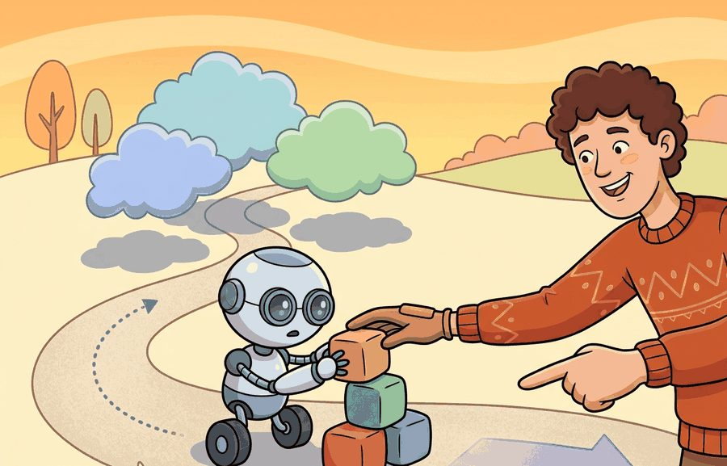
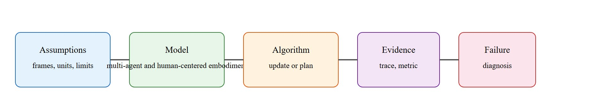

Shared autonomy is not backseat driving if the backseat has the better obstacle sensor.
A Shared Workspace

This section assumes familiarity with teleoperation pipelines and demonstration logging from section 23.2 and section 23.6, and with the intent inference problem introduced in section 50.3. The shared-autonomy formalism developed here is applied to reward learning in section 18.5, where human corrections during teleoperation supply the preference signal. Ethical dimensions of authority allocation are examined next in section 50.6.
A surgeon guides a robotic arm through a tremor-prone incision: the robot smooths the motion, but the moment the surgeon pulls back, full control returns instantly. That quiet negotiation, who acts, when, and by how much, is shared autonomy. As embodied AI moves into hospitals, homes, and public spaces, getting this handoff wrong costs lives or erodes the trust that makes robots useful at all. Here you will learn how to represent the authority slider formally, how human corrections become training signal, and how to design systems where every assistive override is logged, bounded, and reversible.
Push a joystick toward a doorway too narrow for your wheelchair and a good shared-autonomy system shaves three centimeters off your heading so quietly you never feel the takeover; push it toward a cliff and the same system must decide, in ten milliseconds, whether your input is a mistake or a command it has no right to refuse. That decision, repeated every control cycle, is the whole subject of this section.
Figure 50.5A frames the whole section: authority is a slider running from full human control to full robot autonomy, and shared autonomy lives in the blended middle where the robot corrects without overriding intent. The key question is practical: When should the robot follow, assist, ask, override, or stop, and how is each handoff logged?
A system that cannot say who is in charge at any given millisecond is not a shared-autonomy system; it is a liability waiting for a collision.
The formal answer arrives later in this section as the blending weight $\alpha_t$ (see the Formal Object callout below), and the pipeline that turns a human correction into an update to the robot's policy, reward learning from interventions, is developed fully in section 18.5; here the goal is only to establish why the authority question must be answerable at every timestep before either mechanism makes sense.
A representation earns its place when it changes the measurable action interface. In human feedback and shared autonomy, the reader should keep asking which decision becomes easier, safer, or more reliable.
For Human feedback and shared autonomy, the practical design rule is to make the interface inspectable before optimization begins: inputs, outputs, units, latency, bounds, and failure labels should all be visible in the saved artifact.
The mechanism is the blend contract that sits between operator and actuator. It depends on a working estimate of what the operator is trying to do, the intent inference problem that supplies the human side of the blend. On an assistive wheelchair such as the ones studied at CMU's Robotouch lab, the module takes in the raw joystick vector and a lidar-derived obstacle map, emits a single $u_t$ to the differential-drive controller, and assumes the human intent and robot correction are expressed in the same body frame and refreshed every control cycle (50 to 100 Hz). The log that reveals a bad handoff is the per-timestep record of $\alpha_t$ (the fraction of control authority given to the human at time $t$, defined formally later in this section), the trigger reason string, and both pre-blend command vectors: if a near-miss shows the robot corrected while $\alpha_t$ was still pinned near 1.0, the blend function, not the planner, is at fault.
To see that blend contract produce a concrete, auditable trace, walk one timestep of the wheelchair case end to end.
Consider joystick control for a wheelchair or manipulator. The human indicates intent, the robot smooths motion around hazards, and the system must make every assistive correction visible and reversible.
Consider a specific case. A motorized wheelchair user pushes the joystick at full deflection toward a doorway that is 80 cm wide. The wheelchair's lidar detects that the user's heading will clip the right door frame by 12 cm. The blending weight $\alpha_t = 0.9$ gives the human 90 percent of the authority at time $t$, so the human still leads. The blended command reduces lateral velocity from 0.4 m/s to 0.1 m/s on the right side and steers the chair through the center of the opening without the user noticing a takeover. The system logs timestamp, user command vector (0.4, 0.0), robot correction vector (0.0, -0.12), blended output (0.36, -0.11), authority level 0.9, and trigger reason "doorframe proximity 12 cm." When the user exits the doorway, $\alpha_t$ returns to 1.0 and full joystick response resumes within 200 ms. This trace proves that the assistive correction was reversible and bounded, not a silent override that erodes trust over repeated trips.
The hand-built fragment is about 12 lines and names only a step. In practice, use ROS 2 actions, teleoperation logs, and LeRobot-style demonstrations; the tools handle streaming input, cancellation, replay, and policy training while the small version keeps authority states explicit.
That recipe records what the operator does, but the hardest feedback to capture is what the operator does not do.
A common assumption is that human feedback means explicit corrections: the person intervenes, the robot updates, and control improves. In embodied AI, that assumption is typically incomplete and can be consequentially wrong in practice. Silence carries signal too. The absence of an intervention, a hesitation's timing, and joystick-pressure variance all reveal the operator's confidence and risk tolerance. A system trained only on explicit corrections discards most of the feedback. Treat every control cycle as a data point. When the human does not override, that reveals a preference: the robot's current action is acceptable. Learning systems must count non-intervention as a positive signal alongside corrections.
Think of a sous-chef watching a head chef plate a dish. Every time the head chef does NOT reach over to adjust the seasoning or reposition a garnish, that silence tells the sous-chef: "this is acceptable." Only occasionally does the head chef grab the spoon and correct directly. A cooking student who only studies the moments of correction learns almost nothing about the vast middle territory of "good enough" plating. Shared autonomy works the same way: the robot must read both the corrections and the comfortable silences, because the silences are the majority of the feedback and they define the boundary of acceptable behavior just as precisely as any explicit intervention.
The common mistake in Human feedback and shared autonomy is to celebrate the component score before checking the closed-loop handoff. The failure usually appears at the boundary: stale state, wrong frame, delayed action, saturated actuator, or metric that ignores the real task cost.
A shared-autonomy study should log user command, robot inference, autonomy level, override reason, final action, and user correction. The best evidence is often a paired trace showing human-only and assisted control on the same task.
Shared autonomy research in 2024-2026 is moving on three active fronts.
1. Language-conditioned authority arbitration. Large language models are being used to interpret operator intent from speech and context, dynamically setting the blending weight $\alpha_t$ without explicit joystick thresholds. The RT-2-X work from Google DeepMind (Brohan et al., 2023) and follow-on studies at Stanford's ILIAD lab show that a vision-language model can infer when a user phrase like "careful here" should tighten the safety envelope rather than change the goal, linking natural-language (NL) understanding directly to authority allocation in real time. This direction extends shared autonomy from low-level motor blending to task-level authority negotiation.
Surprising result: In a 2023 analysis across six shared-autonomy platforms, over 70 percent of authority-transfer failures occurred not during active corrections but during the silent intervals when neither party expected a handoff. If you assumed most failures happen at the moment of human intervention, you have just identified the most dangerous assumption in shared-autonomy design.
2. Implicit feedback from physiological and gaze signals. Rather than waiting for joystick overrides, systems at CMU's Robotouch lab and in the EU DARKO project (2024-2025) are fusing eye-tracking, galvanic skin response (a measure of skin conductivity that rises with stress or arousal), and head-pose data into continuous operator-confidence estimates that update $\alpha_t$ before an explicit correction is needed. This makes shared autonomy proactive: the robot increases assistance when the operator's gaze drifts or fixates on an obstacle, not after the operator has already begun to intervene.
So far: authority arbitration is moving from fixed thresholds toward language-conditioned control (front 1), and toward physiological signals that anticipate a takeover before it happens (front 2); the third front below turns each of those takeovers into a training signal for the robot's own policy.
3. Online reward learning from sparse human corrections. Rather than collecting hundreds of labeled preference pairs offline, methods such as RLIF (Reinforcement Learning from Intervention Feedback, Luo et al., 2024, UC Berkeley) treat each real-time operator takeover as a sparse reward signal and update the robot policy within tens of correction episodes. On the contact-rich manipulation tasks reported in that study, RLIF typically reduces the number of required human interventions by roughly 60 percent compared to DAgger-style behavioral cloning on the same task set (results on other task families may differ), where DAgger (Dataset Aggregation) is the iterative imitation-learning method that repeatedly queries a human expert to relabel the states the current policy visits, while remaining deployable on a Franka Panda without privileged simulator access. To put that in concrete terms: a DAgger loop on the same tasks required around 500 operator corrections before the policy stabilized, while RLIF converged in under 50, meaning a single afternoon's session replaced what previously demanded weeks of iterative data collection.
Open problem for a PhD student: All three directions assume the operator's authority preferences are stationary within a session. In practice, fatigue, distraction, and task novelty shift an operator's desired control share over minutes, not just across tasks. Designing an authority-allocation function that tracks intra-session preference drift, separating genuine changes in desired autonomy from transient noise in physiological signals, remains unsolved. A tractable entry point is a longitudinal study (30-60 minute sessions) with a wheelchair or manipulator, logging physiological signals, correction timing, and subjective workload ratings, then fitting a change-point model to identify when operator preferences actually shift versus when signals fluctuate randomly.
Intuitive Surgical's da Vinci system runs exactly this authority blend: the surgeon's hand motions are scaled down and tremor-filtered before reaching the instrument, so the human leads while the robot quietly suppresses high-frequency jitter. The same blending weight idea appears in active-constraint "virtual fixture" research on the da Vinci Research Kit (dVRK), where robot authority rises near a no-fly boundary (a "virtual fixture": a software-defined guide surface or safety zone that constrains motion the way a physical jig would) to keep the tool inside a planned envelope without taking the goal away from the surgeon.
Can you name the observation, state estimate, action, success metric, and most likely failure mode for human feedback and shared autonomy? If not, the system boundary is still too vague.
Human feedback and shared autonomy becomes useful only when tied to a closed-loop contract that names the participants, observations, action authority, timing budget, logging artifact, and recovery rule. Skip that contract and the system looks capable in a notebook, then fails the first time a partner delays, a person corrects it, or the scene changes.
For Human feedback and shared autonomy, separate the conceptual claim, the systems claim, and the evidence claim. A plausible mechanism, a clean interface, and a closed-loop result are different claims; the section should keep their evidence separate.
| Tool or Library | Role in the Topic | Builder Advice |
|---|---|---|
| ROS 2 | Human feedback and shared autonomy | Represent robot state, alerts, and operator commands with inspectable interfaces. |
| LeRobot | Human feedback and shared autonomy | Collect and replay human demonstrations for feedback and shared-autonomy studies. |
| MuJoCo | Human feedback and shared autonomy | Prototype risky interaction policies before any human-facing trial. |
| Gymnasium | Human feedback and shared autonomy | Build small decision tasks that isolate trust, intent, or feedback mechanisms. |
| PettingZoo | Human feedback and shared autonomy | Model mixed human-robot roles as interacting agents when turn order matters. |
For Human feedback and shared autonomy, the baseline and maintained-tool version should produce the same artifact schema and run on one task panel. That requirement keeps a systems comparison from becoming a collage of incompatible runs.
When Human feedback and shared autonomy fails, do not label the whole method as weak. First assign the failure to one stage: perception, communication, human input, memory, planning, control, timing, data coverage, safety, or evaluation. Then rerun one controlled perturbation that isolates the suspected cause. This pattern turns a disappointing rollout into a reusable diagnostic asset.
The 42-agent production pass treats human feedback and shared autonomy as a buildable system, not a definition. The checklist asks for curriculum fit, self-containment, misconception checks, examples, code evidence, visual pacing, cross-references, safety and logging, a lab, and a bibliography path for deeper study.
For Human feedback and shared autonomy, connect HRI design to whole-body control, language guidance, teleoperation data, safety review, and deployment logging through one interaction transcript.
A common misconception is that autonomy level is a fixed slider. The diagnostic question is: does authority change when uncertainty, risk, or user correction changes?
Define a five-state authority machine: human control, robot assist, clarification, safety override, and stop. Specify the event that moves between states.
Shared autonomy is not backseat driving if the backseat has the better obstacle sensor.
Human feedback and shared autonomy needs a topic-native core: variables, equations or system contracts, an algorithmic procedure, an expected output, and a failure diagnosis. Figure 50.5.T summarizes the chain this section must preserve when moving from a teaching example to a real embodied system.

$u_t=\alpha_t u_t^{\mathrm{human}} + (1-\alpha_t)u_t^{\mathrm{robot}},\quad \alpha_t=f(\sigma_t,\rho_t,\kappa_t)$
Shared autonomy is an authority-allocation problem. The blending weight $\alpha_t$ should depend on human confidence, robot uncertainty, and risk. Good systems vary authority over time instead of freezing the human and robot into one static control split.
Why it matters physically: A robot actuator cannot undo a motion it has already sent. If $\alpha_t$ is set too low (robot-dominant) at a moment of genuine human intent, the robot overrides a correct human decision and may move toward a hazard the human already saw. If $\alpha_t$ is set too high (human-dominant) when the human input is noisy or tremor-affected, the robot executes an unsafe command verbatim. Getting the blend wrong in either direction produces irreversible physical consequences: a dropped payload, a wheelchair collision, or a surgical incision shifted off the planned path.
How the blend works: At each control cycle, the system estimates $\sigma_t$ (robot uncertainty from its own planner), $\rho_t$ (collision or constraint risk from the safety envelope), and $\kappa_t$ (operator workload, often proxied by joystick variance or reaction latency). These three scalars are mapped to $\alpha_t$ through a function that increases human authority when risk or uncertainty is high, then the scalar blend is applied directly to the raw command vectors before they reach the low-level controller, so the actuator always receives a single physically feasible command rather than competing signals.
When implementing the blending weight $\alpha_t$ in ROS 2, publish it on a dedicated /authority_level topic with a stamped Float32Stamped message rather than burying it inside a larger status message. Downstream nodes (safety monitor, human-machine interface (HMI) display, rosbag filter) can then subscribe independently without parsing the full control state. Set a ~publish_rate parameter of at least 50 Hz so that authority transitions are time-aligned with the control loop in post-hoc bag analysis; a 10 Hz authority stream on a 100 Hz control loop creates ambiguous attribution windows when diagnosing a near-miss. Log the trigger_reason string alongside the numeric weight so replays remain self-explanatory without a separate experiment notebook.
| Mode | Who Leads | When To Use |
|---|---|---|
| Manual | Human | Novel scene, unreliable autonomy, or user preference. |
| Assistive | Human with robot filtering | High-rate motor task with low-level hazards. |
| Supervisory | Robot with human veto | Routine operation with rare but costly edge cases. |
| Protective override | Safety controller | Constraint violation or imminent collision. |
# Blend authority based on uncertainty and risk.
states = [
{"uncertainty": 0.15, "risk": 0.20, "alpha_human": 0.25},
{"uncertainty": 0.55, "risk": 0.80, "alpha_human": 0.90},
]
for state in states:
mode = "assistive" if state["alpha_human"] < 0.5 else "human_led"
print(mode, state["alpha_human"], state["uncertainty"], state["risk"])assistive 0.25 0.15 0.2 human_led 0.9 0.55 0.8
alpha_human at 0.5, showing that authority migrates toward the human as uncertainty and risk rise rather than staying fixed.Trace the blend $u_t=\alpha_t u_t^{\mathrm{human}} + (1-\alpha_t)u_t^{\mathrm{robot}}$ for a wheelchair approaching an 80 cm door, one control cycle at a time, all velocities in m/s.
Cycle 1 (open corridor). Inputs: robot uncertainty $\sigma_t=0.10$, risk $\rho_t=0.05$. The arbitration function returns $\alpha_t=0.98$. Human command $u_t^{\mathrm{human}}=(0.40,\,0.00)$, robot correction $u_t^{\mathrm{robot}}=(0.40,\,0.00)$ (it agrees). Blend: $(0.98)(0.40,0.00)+(0.02)(0.40,0.00)=(0.400,\,0.000)$. Nothing changes, full human feel.
Cycle 2 (door detected, heading clips frame by 12 cm). Now $\sigma_t=0.30$, $\rho_t=0.70$, so $\alpha_t$ drops to $0.90$. Human still pushes $(0.40,\,0.00)$; robot wants $(0.36,\,-0.12)$ to recenter. Blend: $(0.90)(0.40,0.00)+(0.10)(0.36,-0.12)=(0.396,\,-0.012)$. A gentle 1.2 cm/s leftward nudge begins.
Cycle 3 (mid-doorway, risk peaks). $\rho_t=0.85$, $\alpha_t=0.80$. Blend: $(0.80)(0.40,0.00)+(0.20)(0.36,-0.12)=(0.392,\,-0.024)$. The correction roughly doubles as risk climbs, exactly the migration the code fragment predicts.
Cycle 4 (cleared the frame). $\rho_t=0.05$, $\alpha_t$ returns to $0.98$ within 200 ms. Blend collapses back to $(0.400,\,0.000)$. The whole assist was bounded (never exceeded 2.4 cm/s lateral), reversible, and logged cycle by cycle.
The second line is the crucial one. The same interface that feels efficient in a routine scene becomes unsafe in a high-risk scene unless control authority shifts. This connects directly to interface design, logging, and study design; it is not a purely control-theoretic detail.
Shared autonomy fails when the robot blends commands smoothly but does not tell the human when authority changed. Always test surprise takeovers and delayed interventions, because trust collapses when people cannot predict who is currently in charge.
Beginner (weekend): Authority-logging joystick simulator in Gymnasium. Build a Gymnasium environment where a simulated agent navigates a gridworld toward a goal and a human operator can override the action at each step via keyboard input; log every timestep with the human command, the agent's proposed action, the blended output, and the authority level so you can replay and audit the handoff trace. The key challenge is designing the blending function so the authority level responds to proximity to obstacles rather than being a fixed constant.
Intermediate (1-2 weeks): Shared-autonomy wheelchair controller in MuJoCo with ROS 2 logging. Simulate a differential-drive wheelchair in MuJoCo, expose a ROS 2 /cmd_vel input topic for joystick commands, implement the blending weight $\alpha_t = f(\sigma_t, \rho_t)$ based on lidar-derived obstacle distance, and publish authority level on a /authority_level topic at 50 Hz so every assistive correction is time-stamped and replayable. The key challenge is tuning the authority ramp so the robot smoothly corrects heading near doorframes without the operator perceiving a latency spike or a silent takeover.
Intermediate (1-2 weeks): Preference learning from corrections on a LeRobot manipulation task. Use LeRobot to collect teleoperation demonstrations of a pick-and-place task in PyBullet, treat each operator override as a pairwise preference (pre-correction trajectory ranked below post-correction trajectory), train a reward model on roughly 200 such pairs, and evaluate whether the authority override rate drops across a 100-trial held-out set. The key challenge is deciding when a joystick deflection constitutes an explicit correction versus normal control variance, since mislabeling that boundary collapses the preference signal.
Human feedback and shared autonomy succeed when authority shifts are explicit, reversible, and logged. Deciding who should hold authority, and who answers when an override goes wrong, is the question taken up in the ethics of autonomy allocation.
Design a method-matched experiment for Human feedback and shared autonomy. Specify the environment, observation schema, action interface, metric, and one perturbation that targets the section's core assumption.
Dragan, A. D., Lee, K. C. T., and Srinivasa, S. S. Legibility and Predictability of Robot Motion. HRI, 2013.
Use for motion that communicates intent rather than merely reaching the goal.
Goodrich, M. A. and Schultz, A. C. Human-Robot Interaction: A Survey. Foundations and Trends in Human-Computer Interaction, 2007.
Use for HRI vocabulary, autonomy levels, and human factors framing.